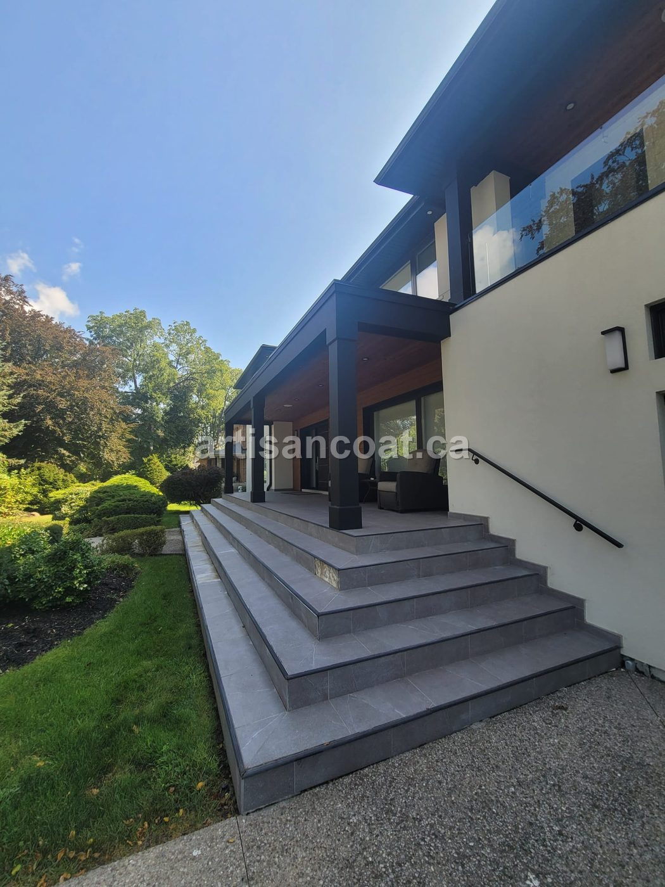
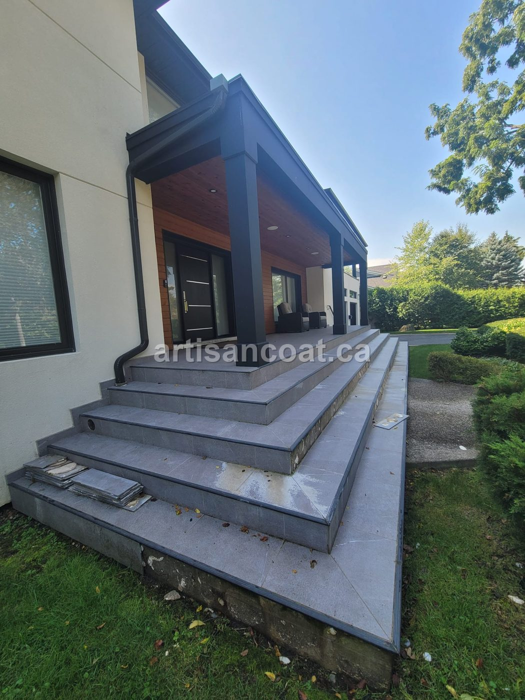
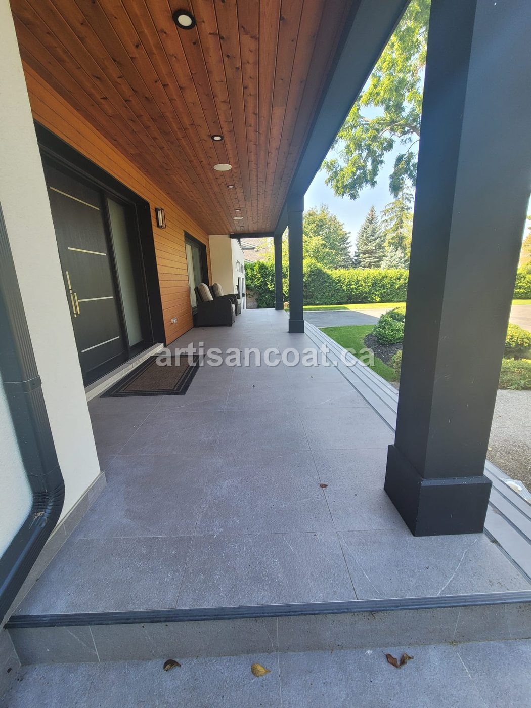
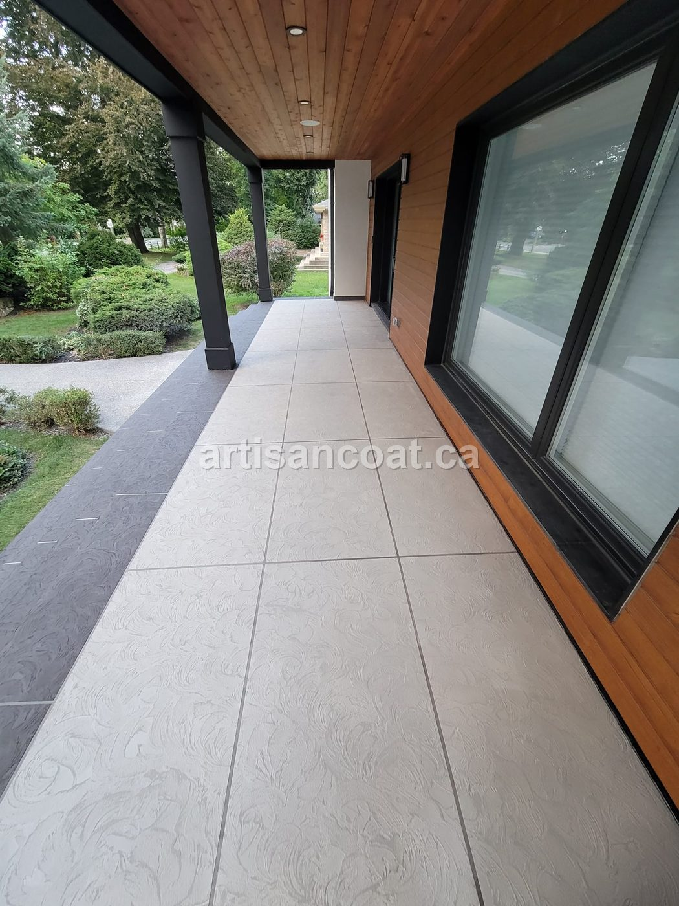
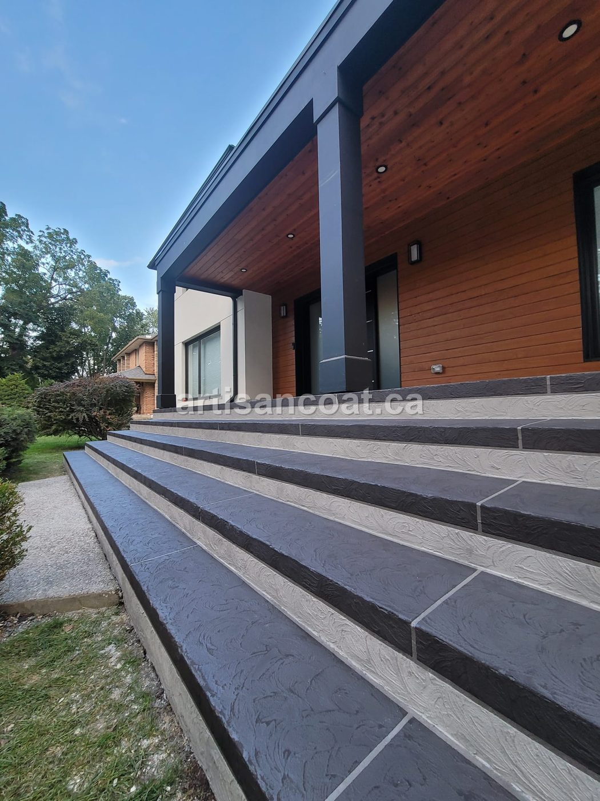
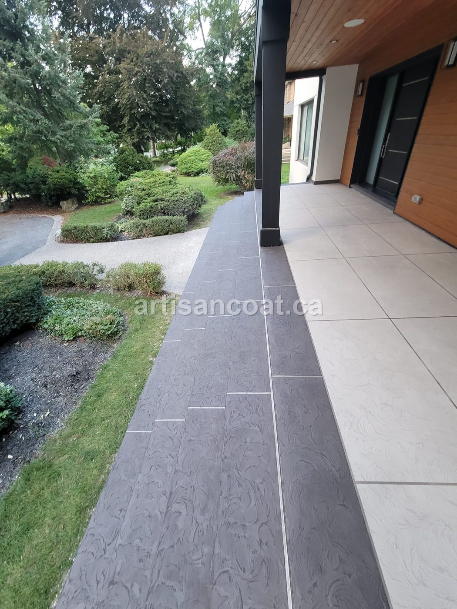

Every so often a project lands on our schedule that perfectly explains why we do what we do. This was one of them: a beautiful modern home in Vaughan with a wide front porch and a generous set of entrance steps — all finished in large porcelain tile that had, over just a few years, started to fall apart.
The homeowner reached out with two complaints we hear constantly: "the tiles are coming off" and "it's slippery." Both are more than cosmetic problems. Loose tile and a slick surface on the main entrance to a home is a safety issue — especially heading into a GTA winter.
The Problem: Tile Doesn't Love Canadian Winters
Outdoor tile looks great on day one. The trouble is what happens underneath it over a few freeze-thaw seasons. Once water finds its way through a single grout line or an edge, it gets trapped between the tile and the concrete. When that water freezes, it expands — and that expansion slowly breaks the bond holding each tile down.
On this porch, the tiles had started letting go one by one. And the damage didn't stop at the surface: the same trapped water had begun eroding the concrete slab underneath, in the spots where tiles had already popped off. Left alone, that's a problem that compounds every single winter.


"Re-tiling would have put them right back where they started. The smarter fix was to remove the tile for good and treat the concrete itself as the finished surface."
Our Approach: Strip It, Repair It, Resurface It
Rather than chase the same failure with a fresh layer of tile, we took the porch back to a solid foundation and rebuilt the surface properly. The job came down to three stages:
- Remove all the tile. Every tile and all the old adhesive came off the porch and steps, right down to the bare concrete.
- Repair and restore the concrete. This is the step that matters most. Because some tiles had already fallen and let water in, the slab underneath was deteriorating in places. We repaired the damaged concrete and restored a sound, stable surface — stopping the erosion before it could spread further.
- Resurface with a decorative concrete overlay. Once the substrate was solid, we applied our decorative concrete bonded directly to it, finishing it with the look of natural flagstone — without the cost of real stone, and with no grout lines to fail.
The reason an overlay like this outlives tile outdoors is simple: there are no individual pieces and no grout joints for water to sneak behind. It's one continuous, bonded, sealed surface engineered for freeze-thaw — so there's nothing for a Canadian winter to pry loose.
Grip Without the Gimmicks
The homeowner's second complaint — slipperiness — was solved by the finish itself. Instead of bolting a gritty anti-slip additive onto a smooth surface, we work a fine texture right into the decorative concrete. That texture does double duty: it's what gives the flagstone finish its natural character and depth, and it provides real traction underfoot in rain and snow.
So the surface that used to be a hazard in wet weather is now one of the grippier surfaces on the property — and it didn't cost extra to make it that way.


Flat Enough to Shovel
Here's a detail homeowners love once winter hits: the finished surface is flat and continuous. There are no raised tile edges and no grout channels to catch a shovel, so clearing snow off the porch and steps is effortless. Combined with a frost-resistant, salt-tolerant seal, it means the surface handles a GTA winter the way the old tile never could.

The Result
The porch and steps went from a failing, slippery liability to a seamless flagstone-style entrance that looks like high-end natural stone — at a fraction of the cost of stone or a full tear-out. The concrete underneath is repaired and protected from further damage, the surface gives confident grip in any weather, and it's built to shrug off Canadian winters for years to come.
Another happy client added to the list — and one more example of why, in almost every case, the right move isn't to replace your surface, but to resurface it.

Frequently Asked Questions
Why do porch and step tiles fall off?
Tile installed outdoors over concrete is vulnerable to the GTA's freeze-thaw cycles. Once a single grout line or edge lets water in, that water sits under the tile, freezes, expands, and breaks the bond. Tiles start popping off one by one — and the trapped water also begins eroding the concrete underneath. It almost always gets worse, not better, with each winter.
Can you put decorative concrete over a porch where the tiles fell off?
Yes — but only after the surface is properly prepared. We remove all the remaining tile and adhesive, then diagnose and repair the concrete underneath, including any spots where trapped water deteriorated the slab. Once the substrate is sound, we apply a polymer-modified decorative overlay bonded directly to the concrete. Skipping the repair step is why some overlays fail; the prep is the product.
Is textured decorative concrete slippery?
No. We finish the overlay with a fine texture that gives natural grip underfoot — without bolting on a gritty anti-slip additive. The texture is part of the look (it's what gives the flagstone finish its character) and it provides traction in rain and snow, which is a major upgrade over smooth, glossy tile.
Can you shovel snow off a decorative concrete porch?
Yes. The finish is flat and continuous — no raised tile edges or grout channels to catch a shovel — so you can clear snow normally all winter. It's also frost-resistant and sealed against road salt, so winter maintenance won't damage it.
Is resurfacing cheaper than re-tiling a porch?
In most cases, yes — and it lasts longer outdoors. Re-tiling puts you right back where you started, because the same freeze-thaw forces will eventually attack the new grout and adhesive. A bonded decorative concrete overlay gives you a flagstone look without the price of natural stone, with no grout lines to fail. You can get rough pricing fast by sending photos to 416-889-8273 on WhatsApp.